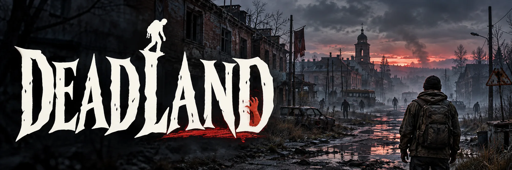

Версия 0.177.7: Настоящие позы сидения и посадка
. Персонаж больше не телепортируется на стул: он подходит, садится и откидывается на спинку.

Город Саратовск. Электричества нет, связь только по локальной сети.
Кооперативное выживание от первого лица на Godot 4.7 .NET. Дома города разбираются по блоку, начинать приходится с голыми руками, а по улицам бродят заражённые. Играть можно одному или вместе, до 8 человек по локальной сети.
Мы откроем его, когда у игры появится настоящий геймплей: понятная цель, прогресс и цена ошибки. Пока Deadland остаётся мастерской, где каждый день рождаются новые механики.
Двери откроются
на версии АЛЬФА-1
АЛЬФА-1 строится из города Саратовска и выйдет к Новому году 2027. Именно с неё начнётся приём игроков.
Подпишитесь на АЛЬФА-1 в Telegram-боте и пришлите идею командой /idea: что добавить,
что изменить, чего не хватает в выживании. Мы читаем всё, а лучшее возьмём в работу и напишем вам.
Собираем механики и пересобираем город. Всё, что готово, видно в журнале версий.
Первая версия с законченным кругом игры. Открываем закрытый тест и зовём первых игроков.
Отчёты тестеров, правки и расширение мира.
В день выхода бот напишет вам сам. Он хранит только ваш Telegram-id и ник, чтобы это сделать и ответить на идею.
Что менялось в каждой сборке: механики, исправления, файлы и проверки. Записи идут по дням разработки, от прототипа 0.0 до 0.177.7. Нажмите на запись, чтобы раскрыть подробности.
. Персонаж больше не телепортируется на стул: он подходит, садится и откидывается на спинку.
. Чтобы сбить огонь с себя, персонаж теперь по-настоящему катается по земле, а не просто приседает.
. Курение и кашель получили настоящие звуки, а сутулость при депрессии принята автором.
. При тяжёлой депрессии персонаж горбится по-настоящему, а у горящей сигареты вьётся дымок.
. Ягода в руке зажата большим и указательным пальцами с двух сторон, как и должно быть.
. Пламя сверено с фотографиями настоящего огня, а струя огнетушителя раскрывается облаком у цели.
. Все десять ягодных кустов получили подробные модели, а ягоды в руке стали настоящего размера.
. В лесу растут десять настоящих ягод, а что каждая делает, решает сид мира.
. В мире появился настоящий огонь: он горит, перекидывается, жжёт зомби и вас, а гасится водой, землёй и огнетушителем.
. Пока персонаж спит, депрессия не растёт, а сон по-прежнему снимает её на 20.
. При тяжёлой депрессии персонаж сутулится, а поза сигареты у рта принята автором.
. На мебель можно сесть клавишей O: отдых быстрее, а в кооперативе можно сидеть рядом.
. Грязную и окровавленную одежду можно постирать в тазу или ведре с водой.
. Пока сигарета горит, персонаж держит её у губ, и это видно другим игрокам.
. Сигареты снимают скуку и страх, но привыкание даёт ломку; появилась депрессия и лекарство от неё.
. Персонаж устаёт и может лечь спать: на кровати, диване, в спальнике или прямо на земле.
. Когда рюкзак и карманы полны, подобранное складывается в охапку в обеих руках.
. Появилась корзина: она носится двумя руками, вмещает до 15 кг и принимает подобранное по F.
. Молоток и другие инструменты теряют прочность при работе и в конце концов ломаются.
. В инвентаре появился список того, что лежит рядом: земля, открытая мебель и труп.
. Вещь, которую вы переносите мышью в другой контейнер, перекладывается не сразу, а как при доставании.
. Клавиши 1–8 берут ту самую вещь, а не первую такого же вида, поэтому два молотка можно держать на двух клавишах.
. Генератор заводится с одной попытки в 70 % случаев, а подсказки у прицела это объясняют.
. У оторванной ножки появилась настоящая модель, а разбор мебели без ножек даёт меньше досок.
. Генератор запускается рывком шнура, гудит и глохнет со звуком, а переливание жидкостей слышно.
. Спичка и зажигалка горят в руке и дают маленький свет, у горящих вещей виден огонёк.
. Свет фонарика, свечи, лампы и факела выходит из предмета в руке, а заряд батареек виден на слотах инвентаря.
. У игрока волосы, брови и щетина берутся без упрощения и лежат на коже, а не внутри головы.
. Ножки стула, табурета и стола отрываются по одной, мебель кренится и падает, а ножку можно распилить на доску.
. У факела появилась настоящая модель, а заправка генератора стала занимать около 12 секунд.
. Генератор заправляется бензином и питает дома в радиусе 25 метров, но шумит, и зомби его слышат.
. Ветку можно поджечь от костра, а из ветки, тряпки и смолы сделать факел на 25 минут.
. Вдоль городских дорог через 30 метров стоят фонари, ночью они горят тёплым светом.
. В каждой комнате города есть светильник и выключатель на F, лампочки иногда перегорают.
. Свеча и керосиновая лампа дают свет ночью, гаснут от дождя и бега и могут гореть на земле.
. Ночь стала по-настоящему тёмной, а свет дают фонарик, налобный фонарь и батарейки, которые светят по часу.
. Одежда переделана по одной вещи: рубашка, худи, куртки, брюки, носки, перчатки, шапки, тапочки и пижама сидят по телу, лежат слоями и выглядят поношенными.
. Поза покоя стала симметричной, а ноги больше не рогаткой и не О-образные: колени над стопами, ноги параллельны.
. Другого выжившего можно лечить: подойти вплотную и зажать H, откроется его вкладка «Тело» с ранами, повязками и болезнями.
. Рабочие ботинки стали жёсткой моделью на костях стоп, у порванной обуви видны дыры, а джинсы заправляются в обувь.
. Кроссовки стали высокими холщовыми кедами на костях стоп; носки и кожа стопы больше не выпирают сквозь обувь, с пятки убран ярлык.
. Шина ускоряет срастание перелома, раны можно зашивать, таблетки глушат боль и жар, а аптечка стала контейнером, который открывается в окне инвентаря.
. Футболка и джинсы переделаны: свободная посадка, фактура трикотажа и денима, джинсы стали тоньше; у мужчины ноги прямее.
. В игре появились болезни: простуда от мокрой одежды на холоде, грипп, отравление и хронические болезни у персонажа с лекарствами от них.
. Футболка на персонаже и на зомби теперь садится свободно, а подол ровный.
. У зомби теперь всего два вида внешности: мужчина и женщина. Одежда одна на пол: футболка, джинсы, носки и кроссовки.
. За серию версий 0.161.1–0.161.8 внешний вид персонажа сильно изменился: лицо с рельефом настоящего скана, тело и голова на порядок детальнее, кожа с веснушками и порами, щетина и брови с плавной прозрачностью.
. Раны теперь могут заразиться, а грязная повязка мешает заживлению. Появились зомби-вирус и первые лекарства: два антибиотика и медицинский спирт.
. У выжившего появилась кровь в процентах и семь видов ран на любой части тела. Это первый срез медицины: заражений, болезней и лекарств пока нет.
. Лица персонажей и зомби стали живее: кожа с порами и рассеиванием света, влажные глаза, мягкие брови и щетина.
. Мелкая правка консоли разработчика: команда надевания одежды больше не говорит, что мешает верхний слой.
. Чтобы надеть вещь, ничего снимать не нужно: слои одежды выстраиваются сами. В окне инвентаря рулон одежды и значок в панели «Руки» теперь в цвете вещи.
. Теперь можно снять любую надетую вещь, что бы ни было надето поверх.
. ПКМ по надетой вещи под верхним слоем открывал пустое меню. Теперь в нём всегда есть строка «Снять».
. Правая кнопка по слоту надетой одежды в окне инвентаря теперь открывает меню.
. Контекстное меню предмета проверено на всех 295 предметах игры. Найдены и исправлены две ошибки: у дырявой одежды не было починки, а «Съесть» и «Выпить» из меню работали с ошибкой.
. Двойной щелчок левой кнопкой по одежде в слоте инвентаря надевает её так же, как Ctrl+ЛКМ.
. К скуке и комфорту добавился страх: зомби в погоне пугают персонажа и ухудшают его действия. Комфорт дают кровать и мебель для сидения, а мокрая одежда сохнет быстрее в тепле.
. К скуке добавились комфорт и неуют. Огонь, крыша и тёплая еда дают комфорт, а комфорт ускоряет лечение и успокаивает скуку.
. Появилось состояние «скука»: кто долго делает одно и то же, начинает скучать, и это делает работу хуже. Скуку снимают отдых, еда и тёплое питьё.
. Если приседать на ходу подряд, мышцы ног устают: присед замедляется, а персонаж становится слышнее.
. В городе теперь три готовых дома. К первому добавились старый деревенский на участке 14 и двухэтажный деревянный с террасой и балконом на участке 15.
. Любой предмет из активного слота можно поставить на землю, пол, полку или спрятать в открытый ящик по P, а не только уронить.
. Двери и окна домов теперь запираются. Их можно сломать, вскрыть ножом или ломом, а замок открыть отмычкой в мини-игре. Сейф и касса тоже вскрываются.
. Появились карта и компас как вещи. Карта показывает то, что персонаж уже видел, на ней можно рисовать и обмениваться ей с другими игроками.
. Игрок, погибший в мире, встаёт зомби со своей внешностью, а мёртвые тела и зомби сохраняются между запусками мира.
. Ночью вдали снова ухают совы, теперь по настоящей записи. Звуки и правки двух линий игры собраны в одну версию.
. Клавиша G из активного слота теперь кладёт под ноги любой предмет, в том числе землю, листву, металлолом, щебень и осколки плитки.
. В записи леса почти всё время звучал колокол, его убрали. А разбор мебели теперь требует нужный инструмент именно в руке.
. Ночной звук, похожий на плач, оказался совой. Его убрали: ночью остаются только птицы.
. Исправление версии 0.146.0: при удержании F мебель не открывалась, кольцо доходило до середины и отменялось.
. Мебель на Z берётся только пустыми руками. Пока её несут, она занимает выбранную ячейку быстрого доступа.
. Если удержать F, дверца, ящик, дверь или окно открываются медленно и тихо. Обычное нажатие F по-прежнему открывает сразу, но шум для зомби теперь зависит от того, что открывают.
. Подсказка у прицела перенесена вниз, над панель быстрого доступа, и стала одной компактной строкой.
. Подсказка «удерживать F — разобрать» теперь появляется только тогда, когда в руке нужный инструмент.
. В игру влита линия Eksailed: вся система звука (шаги, дыхание, бой, предметы, интерфейс, зомби, музыка и атмосфера), ночное небо и поза чтения. Теперь это одна игра вместе с крафтом, навыками и обыском трупов.
. Раньше шапка зомби парила над головой, садилась на лицо и шею. Теперь шапки и причёски сидят на голове.
. В подсказках у костра, печи, кузницы и коптильни «топлива на N» теперь показывает реальные минуты, а не игровые.
. В окне выжившего появилась вкладка «Навыки» с уровнями и опытом за крафт, перевязку и разбор. Мебель теперь можно разбирать на материалы.
. Одежда на зомби подгонялась к телу неточно из-за случайных ползунков формы. Теперь они не рандомизируются, и обувь сидит на ногах.
. В окне обыска зомби двойной щелчок левой кнопкой по вещи или по надетой одежде забирает её в инвентарь, как правая кнопка.
. Исправление версии 0.135.0: одежда на зомби выглядела кривой, сквозь неё проступало тело. Теперь это исправлено.
. В окне инвентаря Ctrl+ЛКМ по вещи одежды начинает надевать её в пустой слот своего вида.
. Раньше игрок и зомби проходили друг сквозь друга. Теперь они упираются друг в друга.
. Газовая плита стала станцией для готовки: включается по F, газ не кончается, спички не нужны. Появилось кипячение: из тряпок и бинтов получаются стерильные повязки, которые заживляют рану быстрее.
. Пять станций получили готовые модели из интернета вместо самодельных, а дровяная печь стала настоящей станцией: на ней можно готовить.
. Зомби теперь одеты: футболка, джинсы, куртка, шапка, рюкзак. Одежду видно на живом зомби и на трупе, а обыск трупа делается удержанием F.
. В игре появились кузница и самодельная наковальня, а на них можно ковать: гвозди из лома, самодельный нож и металлический топор. Это третий срез этапа «сушилка, коптильня, кузница» плана крафта.
. При нуле здоровья персонаж погибает, а через 20 секунд встаёт зомби со всеми своими вещами. Появился экран гибели и выбор нового персонажа.
. Новая станция «Коптильня»: в ней мясо коптится над огнём и становится копчёным. Это второй срез этапа «сушилка, коптильня, кузница» плана крафта.
. Убитого зомби можно обыскать: окно с его одеждой и вещами в карманах и рюкзаке. Вещи с убитых на землю больше не падают.
. Пустой рукой F снимает с сушилки недоспевшее мясо сырым, а саму сушилку можно взять на Z и переставить.
. Закрытая банка консервов больше не еда: её нужно открыть ножом или консервным ножом. В контекстном меню, когда способов несколько, строка раскрывается подменю.
. В игре появилась станция «Сушилка»: на ней сырое мясо вялится и превращается в вяленое. Это первый срез этапа «сушилка, коптильня, кузница» плана крафта.
. При создании мира в «Параметрах мира» выбирается, сколько добычи будет: отдельно в домах, у убитых зомби и в природе. С убитого зомби теперь падают предметы из карманов.
. По решению автора второй дом города, дачный бревенчатый домик Б на участке «Дом лесника», удалён целиком. На карте остался один готовый дом, А («Дом учителя»).
. В игре появилась готовка: 11 блюд на костре и газовой плите. Рецепты открываются знанием: пока персонаж не прочтёт журнал, они скрыты в окне крафта.
. Правая кнопка по предмету в окне инвентаря открывает меню действий. Те же действия работают инструментом с курсора: изолента на побитую вещь, уголь на грязную воду.
. Время теперь можно узнать по наручным часам, а мир живёт по общим часам: солнце, луна, рассвет и закат, ночное небо со звёздами.
. Заводской верстак стал детальнее: ржавый, полузаброшенный, с тремя вариантами оформления на выбор. Выбран вариант А.
. При чтении чертежа или журнала персонаж держит раскрытую книгу двумя руками, голова опущена, страницы перелистываются.
. Из окна инвентаря убрали сетку и счёт мест: вещи лежат значками, а вмещает вес. Теперь решает только сколько вы несёте.
. Заводской верстак нужно уметь строить: сначала прочитать чертёж. Знание хранится у персонажа и пропадает со смертью.
. Трава ожила: по полю бегут порывы ветра, она расступается под игроком и зомби, а у камеры стал гуще низкий слой.
. Верстаков теперь два: самодельный из подручных материалов и заводской, который быстрее. Оба переносятся на Z и разбираются по F.
. Дождь переписан: капли-штрихи, лужи с рябью, всплески на земле и настоящий звук ливня.
. Тени от солнца стали мягкими, а в настройках графики появились ползунки теней.
. Вокруг солнца появился ореол, а сквозь листву пробиваются лучи. Костёр получил новую модель и мягкий огонь.
. Костёр можно построить, подбросить в него топливо и поджечь. Небо вместо плоских облаков стало фотографическим.
. Появился самодельный верстак: его строят по проекту, а материал для него можно получить из ножки мебели.
. Жалюзи повесили на окна дома А и сняли комнаты: без жалюзи, опущены и подняты. Тёмно-зелёный вид осветлён, потому что в тёмной кухне он выглядел чёрным пятном.
. В игру добавлены жалюзи: карниз и полотно, которое сворачивается вверх по F и опускается обратно, как рольставня. Три вида.
. Карта заросла лесом: 36 000 деревьев, чащи без просветов и поляны, заросший город. Лес должен пугать, поэтому чем гуще деревья вокруг игрока, тем плотнее туман и темнее свет. В настройках графики дальность леса настраивается.
. Подсказка вроде «F — подобрать: Камень» переписана в том же стиле «пыльного стекла», что окна и инвентарь.
. Карта мира переделана по рисунку автора: вместо сетки кварталов 42 дороги разной ширины, холмы по краям, река Саратовка на востоке с автомобильным мостом. Дома «Учителя» и «Лесника» переехали на западную окраину, как на плане.
. Автор вручную выставил, как берутся в руку ещё 22 предмета, и теперь они лежат в руке именно так. Всего таких предметов уже 173.
. В игре появились станции крафта (верстак, плита, костёр и другие) и настоящее задание изготовления: нажатый «Сделать» закрывает окно, и персонаж работает руками. У игры новая иконка и логотип.
. Хват, который автор выставил для банки рыбных консервов, теперь у всех консервов: так они берутся в руку одинаково.
. Предметы в руках теперь держатся так, как могут гнуться настоящие пальцы, а кровать при переносе берут изголовьем к игроку.
. Осколки стекла по-прежнему не держатся в руках, но активный слот с ними принимает клавишу G: положить под ноги или бросить по взгляду.
. За несколько версий перенос мебели на Z доработан: тяжёлую вещь держат за низ, тихо ставят по удержанию Z, а тяжелее 20 кг только тянут назад.
. Предметы в домах теперь лежат отдельно: две тарелки или три бутылки это отдельные предметы, а не одна стопка. Из морозилки и овощных ящиков ничего не выкладывается наверх.
. Выпитые полуторалитровые бутылки теперь оставляют пустую бутылку, в которую можно снова налить воду. Рулоны одежды берутся в руки так же, как автор выставил полено и бутылку.
. Рабочие ботинки и рабочие перчатки можно взять в руки, а найти их можно в домах. Модели готовые: собственные автор забраковал.
. Пока мебель несут, клавиша R поворачивает её проекцию, чтобы выбрать, какой стороной вещь встанет.
. Любую мебель, кроме настенной, инженерной и тяжёлой уличной, теперь можно взять на руки клавишей Z и поставить в другом месте. Чем тяжелее вещь, тем медленнее и громче её нести.
. Добыча в домах: предметы из версии 0.102 расставлены по комнатам, а лежать вещи теперь могут на любой полке стеллажа и в любом ящике комода.
. В игру добавлены 53 предмета, которых не хватало в доме, и 7 вещей одежды. Теперь в каталоге 244 предмета. Версия 0.102.1 к тому же влила работу Eksailed: каркас молотком и графика D3D12 на Windows.
. Добыча в домах: вещи на низких полках мебели раньше могли торчать в досках. Теперь у полки считается свободная высота, и вещь ставится так, чтобы поместиться.
. Исправлена ошибка, которую нашёл автор в перелезании через окно: выбитое окно нельзя было открыть, а перелезть можно было и с закрытыми створками.
. Если зажать V, отвернуться от предметов и повернуться обратно, жёлтые контуры не возвращались. Теперь возвращаются.
. Раньше при потере соединения игру молча выкидывало в главное меню. Теперь причина обрыва или отказа входа показывается красной плашкой.
. Деревянный и инструментальный ящики в кладовых домов А и Б открывали крышку в стену. Теперь крышка встаёт вертикально перед стеной.
. Пока держишь V, жёлтым контуром обводятся предметы рядом и дверцы мебели. Толчок зомби для этого перенесён на правую кнопку и пробел.
. В основную версию влилась работа Eksailed над падением мёртвых зомби: тело оседает на колени, ступни выпрямляются, туловище жёсткое, а руки и ноги свободно болтаются.
. С карты города убраны 32 воксельных здания. Остались два готовых дома: «Дом учителя» (дом А) и «Дом лесника» (дом Б).
. Через открытое окно теперь можно перелезть клавишей N, в обе стороны, внутрь и наружу.
. В игре появился второй дом города: дачный бревенчатый домик 9 × 6 м на участке «Дом лесника». Бревенчатые стены, зелёная жестяная кровля, пять комнат, окна и двери и 45 вещей.
. Для будущего дома Б (дачного домика) подготовлена добыча: общая таблица вещей и новый список для деревянного ящика. Сам дом Б пока не вышел.
. Кольцо у прицела теперь идёт и при крафте, а дверцы и ящики мебели открываются двумя способами: быстро и громко или тихо с удержанием.
. Ящики комодов не открывались клавишей F. Теперь открываются все 36 ящиков комодов дома А.
. Когда персонаж ест, пьёт или выполняет долгое действие, вокруг прицела заполняется круговое кольцо: видно, сколько уже сделано.
. Подбор проверен в настоящем окне игры со всей мебелью дома А. Исправлено: нижние ящики кухонных шкафов, комодов и серванта не брались, а предметы на комоде лежали внутри телевизора.
. Подсказка предлагала пепельницу, лежавшую на крышке шкафа, хотя игрок смотрел в середину шкафа. Теперь подсказка появляется только у того, на что нацелен прицел.
. Правая кнопка с едой или лекарством запускает анимацию, а сытость и списание предмета приходят в её конце. Если передумать и начать бой, ничего не тратится.
. Предметы на нижней полке холодильника нельзя было подобрать: игра отклоняла подбор. Теперь они берутся как обычно.
. Игрок упирался в щели между мебелью, где модель проходит на глаз. Теперь его размер для столкновений уже: радиус 0,28 м вместо 0,4.
. В доме на школьной парте предметы накладывались друг на друга: место предмету считалось по одному виду модели, а в мире показывался другой.
. Автор вручную выставил урон ещё 154 предметам из таблицы. Теперь урон задан у 180 предметов вместо 26, механики не менялись.
. Исправлено то, что автор нашёл в доме: дверца холодильника открывалась в стену, аптечка стояла внутри стены, раковина смотрела вбок, а предметы на полу уходили под текстуру.
. По просьбе автора название «Ржавый Бор» убрано из игры, город теперь называется Саратовск. Механики не менялись.
. Главное меню переделано: логотип по центру и плавающая стеклянная панель внизу. Тот же стиль получили настройки, «Персонажи», «Благодарности» и загрузка.
. В основную версию вошли поправки крови от Eksailed (0.92.2–0.92.4): кровь идёт из места соприкосновения удара, её стало заметно меньше, а брызги появляются у самого тела зомби.
. Холодильник в доме разобран на части: у морозилки своя дверца, нижние ящики выезжают. Добыча внутри мебели лежит заранее и прячется за закрытой дверцей, а стиральная машина пересобрана с полым барабаном.
. В покое выживший стоял с наклоном вперёд на 8–9° от стоп до головы. Теперь стопы стоят под тазом, колени чуть согнуты, и корпус держится прямо.
. Значки состояния, пояс, предмет в руке и подсказка у прицела получили тот же вид «пыльного стекла», что окна и меню: скруглённые плашки, значки от руки, названия маркером.
. Дополнение к имени игрока: пока персонаж не создан, кнопки «Создать игру» («Продолжить мир») и «Подключиться» в главном меню неактивны.
. В основную версию вошла кровь зомби от Eksailed. Удар брызгает кровью, остаются капли и пятна на земле и стенах, а под убитым растекается лужа.
. Из панели «Начать выживание» убрано поле «Позывной». Именем игрока в лобби, в чате и над головой стало имя выбранного персонажа, которое обязательно вписывается при создании.
. От третьего лица (F5) мышь крутит камеру сама по себе, тело за ней не идёт, а при ударе, подборе и броске резко разворачивается к точке взгляда.
. Автор по снимку окна попросил скруглить кнопки, и некоторые описания не помещались. Углы скруглены во всём интерфейсе, а панель «Руки» стала постоянной высоты.
. При взгляде вниз от первого лица были видны изнанка капюшона и груди и штанины трубками, потом тело стало прозрачным. Теперь видны грудь, живот и ноги, в одежде или без.
. В карман теперь не ложится ёмкость больше литра и вещь с длинной стороной модели больше 35 см. Канистры, вёдра, кастрюли, доски, ветки и лопата в карман не влезают, молоток, бутылка, консервы, кружка и нож проходят.
. Окна «Инвентарь» и «Крафт», главное меню, экран загрузки и настройки переведены на новую тему: тёмное запылённое стекло, названия разделов написаны маркером, значки нарисованы от руки.
. У ползущего зомби появилась анимация ползания на животе, и он лежит на земле, а не парит над ней.
. Пятый вид зомби ползун, зомби лежат неподвижно и встают при подходе, руки и ноги можно оторвать, удар в голову стал сильнее, а услышавший шум зомби сначала замирает.
. В основную версию игры влилась работа Eksailed: ragdoll и походки зомби (0.82–0.83), каркас из бумаги и молоток (0.84) и более быстрая загрузка мира (0.84.1).
. Если наступить босой ногой на осколки стекла, осколок впивался в стопу, но кучка на земле оставалась целой, и вытащенных осколков становилось два. Теперь укол забирает осколок из той кучки, на которую ступили.
. Даже просто коснуться мебели телом персонажа давало просадку до 5–10 кадров в секунду. Теперь тело вещи составлено из плотно прилегающих коробок, и шаг у вещи стал в десятки раз дешевле.
. В первом доме города вещи теперь лежат на мебели и внутри неё: на столешницах, столе, комодах и полках сверху, в шкафах, ящиках, холодильнике и ящике с инструментами внутри. Дверцу или ящик открывают по F, и вещи внутри видны.
. Вкладка «Тело» переделана: слева настоящая трёхмерная кукла выжившего в его одежде, на ноге виден бинт или рана с осколком, справа карточки состояния и ран.
. Окно инвентаря получило быстрый перенос стопок, вес с перегрузом, переливание жидкостей между ёмкостями и питьё с едой через превью персонажа.
. Босая нога в куче осколков стекла, плитки или щебня с шансом 75 % ловит осколок. Рану видно на новой вкладке «Тело»: силуэт, таблица ран и состояние. Осколок вытаскивают, рану перевязывают.
. Проём окна теперь равен раме, и окно стоит заподлицо с кирпичом без щелей. Стекло разбивается с шансом, который зависит от веса предмета в руке: пустой рукой 20 %, кувалдой 94 %.
. Окна первого дома сидели в проёмах неровно: рама высовывалась из стены наружу. Теперь рама лежит в толщине стены, а стекло можно разбить ударом.
. В первом доме города входная дверь не влезала в проём, а внутри двери были меньше проёмов, и персонаж не проходил. Вместо них поставлены свои деревянные двери ровно по проёму.
. На участке «Дом учителя» стоит первый дом города целиком: одноэтажный кирпичный, 12 × 9 м, восемь комнат, девять окон и девять дверей, шестьдесят вещей на своих местах. Дом разрушаемый, как постройки игрока. Выставка перенесена за край карты.
. Для кухни первого дома города сделаны навесные шкафы в четырёх видах и вытяжка над плитой с выдвижным козырьком, тоже в четырёх видах. Чистые и потрёпанные в духе России 2000-х, дверцы шкафов и козырёк открываются по F.
. На выставке теперь стоят все модели каждого предмета и вся одежда в каждом цвете. Отдельный раздел «Одежда на теле»: манекены в мужском и женском телах, пять готовых нарядов и рюкзаки со спины.
. Для прихожей первого дома города добавлены вешалка-стойка из гнутого дерева и обувница в двух видах: откидная тумба на три отделения и решётчатые полки.
. Для спальни первого дома города сделана двуспальная кровать с высоким изголовьем, покрывалом-шотландкой и двумя подушками: свежезастеленная и потрёпанная в духе России 2000-х.
. Автор вручную довёл хват ещё пятнадцати предметов, теперь их тридцать три, и выставил урон двадцати шести предметам; сам код игры не менялся.
. В игре появилось 25 новых вещей группы «еда»: десять видов консервов, десять видов обычной еды и пять видов сырого мяса, а у 19 ёмкостей есть вторая модель с водой.
. Для домов города сделана газовая плита с откидной дверцей духовки и ящиком: выключена, с огнём на одной, двух или всех четырёх конфорках, чистая и потрёпанная в духе России 2000-х.
. Вязаная шапка, кепка и любая вещь для головы теперь скрывают причёску целиком, включая хвост, косу и длинные волосы, а после снятия возвращается выбранная и окрашенная причёска.
. Десять новых причёсок из 0.75.0 больше не лежат в памяти все сразу: загружается только выбранная, а зомби берут причёску из короткого списка недорогих.
. В игре появилось строительство из деталей на сетке 3 м: фундамент, стена, проём и перекрытие ставятся с предметом «Проект» в руке, а действия выбираются круговым меню на правую кнопку мыши.
. Для лута, плиты, готовки, крафта и стройки отдельных анимаций делать не будут: выживший чуть наклоняется вперёд и перебирает руками перед собой, а предмет из рук на время работы убирается.
. Причёсок теперь тринадцать и вариант «Без волос», набор один на оба пола.
. Школьный и военный рюкзаки и поясная сумка теперь с готовыми моделями на персонаже и на земле, а к одежде добавилась бейсболка с козырьком.
. К одежде добавились брюки, фланелевая рубашка, худи с капюшоном, рабочая куртка и вязаная шапка с отворотом, а любую вещь одежды можно взять в руки: она лежит рулоном цвета вещи.
. Джинсы и носки двух длин строятся прямо по форме тела персонажа, а под одеждой больше не пропадают в тени ноги и торс.
. По решению автора обмотки убраны из игры вместе с рецептом: вместо них есть обычные носки и длинные до колена.
. Рабочие перчатки сделаны заново по форме кисти персонажа: они повторяют пальцы и плотно облегают руку, вместо прежних «рваных», которые закрывали кисть клочками.
. У одежды с моделью значок в инвентаре теперь снимок самой вещи в её цвете, как в DayZ, а ячейки надетого в окне «Одежда» показывают эти значки вместо цветных квадратов.
. Футболка больше не просвечивает кожей и бельём, у каждой ткани своя палитра выцветших цветов, добавлены длинные носки, а персонаж появляется в белье вместо квадратного рюкзака на спине.
. Первые четыре вещи одежды получили модели и видны на выжившем: в окне инвентаря и от третьего лица, а перчатки ещё и на руках от первого лица.
. Автор вручную довёл хват алюминиевой и эмалированной мисок, ветки, хлебницы, кирпича и ведра.
. Автор вручную довёл хват ещё трёх предметов: бинокль поправлен, а бутылка отбеливателя и книга получили свой хват.
. Ещё два предмета в руках доведены автором вручную: пальцы ложатся на корзину и бинокль, а не торчат в воздухе.
. Автор вручную довёл, как персонаж держит несколько предметов, и игра берёт этот хват вместо автоматической подгонки: пальцы ложатся на предмет, а не торчат в воздухе или сквозь него.
. В одну ветку собраны работы обоих разработчиков: старт мира перестал тормозить, на встроенной видеокарте выставка больше не роняет игру, зомби получили позы и реакции, а хват предметов начали доводить вручную.
. В игре появилась одежда первого этапа: она даёт карманы, защищает от укусов зомби по зонам тела, греет, снашивается и чинится. Моделей на персонаже у неё пока нет.
. Из игры ушёл старый интерфейс, которого уже не было на экране. Для игрока ничего не меняется: ни вид, ни управление.
. Весь список замечаний автора по держанию предметов пройден заново: каждый из 87 предметов проверен по одному и снят в игре.
. Ящик, аптечка, канистры, ведро и утюги висят низом вниз и не заходят в тело, кружки и чайники держатся за боковую ручку, пилы, половник и фонарики смотрят рабочим концом вперёд.
. На встроенных видеокартах игра падала при загрузке мира: не хватало видеопамяти. Теперь текстуры сжаты, а выставка грузится только рядом с игроком.
. В юго-восточном углу города появилась площадка с блоками, предметами, мебелью, дверями и образцами материалов, а зомби теперь замахивается 0,4–0,6 с, и удар можно отбить.
. Бой с зомби разбирается на голову, корпус, руки и ноги, удар засчитывается на кадре касания, а клавиша ~ открывает консоль разработчика.
. Боевой профиль любого предмета теперь вычисляется из его веса, материала, формы и длины, поэтому драться можно всем, что есть в игре.
. Собрана библиотека зданий из фотосканов и 30 видов открывающихся дверей, окон, ворот и люков; в игру добавлены девять предметов-обломков.
. Стену, перекрытие, крышу, окно, тротуар и асфальт ломают предметом в руке, удерживая ЛКМ, так же как рубят дерево.
. Лесной процедурный мир убран, «Своя игра» всегда создаёт или продолжает город, а демо к Новому году называется АЛЬФА-1 и строится из города.
. Мультяшный HUD заменён экраном с белыми контурными значками, окно по Tab получило вкладки «Инвентарь», «Крафт» и «Тело», главное меню собрано на одной тёмной теме.
. Пальцы обхватывают рукоять по толщине, камень лежит в горсти, резак в щепоти, а ЛКМ бьёт тем, что в руке: молоток, срез, копание, толчок, тычок, рубящий замах.
. Предметы получили модели из сканов Poly Haven (CC0) и Sketchfab (CC-BY) в реальных размерах, а авторов моделей видно в главном меню.
. Eksailed переписал ближний бой: типы урона, силовой замах, добивание, блок и толчок; lerk одел землю и траву в фотоскены и сделал вытаптываемые тропы.
. Детальное управление рендером во вкладках «Графика», «Эффекты» и «Зомби», предзапекание сеток заражённых при загрузке мира и защита входных дверей от перекрытия перегородками.
. Падающий ствол наносит урон игрокам и убивает зомби, вокруг упавшей кроны появляются собираемые сучья, а листва срезается каменным резаком с верхушки поваленного дерева.
. Предметы перестали быть кубиками и коробками: у всех 14 предметов появились составные 3D-модели в реальных размерах каталога, физическая укладка на широкую грань и точный хват по костям кисти.
. Выживший начинает с пустыми руками: сбор камней, веток и волокна по клавише F, цепочка первого крафта с нерасходуемым каменным резаком и объединение с погодой, строительством и ИИ зомби.
. Объединение соседних плоских граней городских блоков сократило сетку чанков с 421 тыс. до 185 тыс. треугольников, окраины разделены на сектора 64×64 м, а невидимые зомби усыпляют скелеты.
. Движущиеся по ветру облака и дождевые тучи с молниями, строительство и укрепление базы из дерева/камня/металла с накладками на грани, память цели и замах удара у зомби.
. Деревья больше не исчезают мгновенно: после серии ударов топором ствол падает от игрока, оставляя пень, а древесина добывается разделкой поваленного бревна.
. Заражённые переведены на процедурно генерируемую внешность с архетипами, характерной позой вытянутых вперёд рук, оптимизацией кадров и исправлением тени от 1-го лица.
. Реализация этапов 1–3 плана первого крафта: отказ от стартового снаряжения, ручной подбор камней, веток и волокна, новые рецепты и раскладка мелочи в мире.
. Из интерфейса и дизайна игры навсегда убраны 7-дневные кровавые орды, а для системы одежды утверждены 17 зон защиты, слои в духе Project Zomboid и 14 вещей демо.
. Два крупных обновления: информативный экран загрузки вместо серого экрана с очисткой верха HUD, а также полноценный стелс-ИИ зомби с конусом зрения и затуханием звука сквозь стены.
. Исправлено неестественное выпячивание груди в стойке покоя и загибание голеней назад при прыжке.
. Полноценный редактор анатомии на базе морфов MakeHuman: 134 параметра в 14 категориях, прямое перетаскивание 16 зон тела мышью, изменение роста ±13 см и быстрое запекание сетки.
. Устранена широко расставленная стойка «рогаткой» — стопы сведены на ширину таза, колени смотрят по направлению носков.
. Выровнена осанка в покое без наклона корпуса вбок, а пустые руки получили полноценную боевую стойку и серии ударов кулаками вверх, прямо и вниз.
. Полный переход со стилизованных анимаций Quaternius на настоящий мокап живых актёров CMU с идеальной постановкой стоп без скольжения и физическим падением предметов на землю.
. Выбранный в меню выживший появляется в мире со своим телом, руками от 1-го лица и внешностью для всех игроков по сети, а хост хранит отдельный прогресс под каждого персонажа.
. Создание и хранение до 12 выживших на мужской и женской модульных основах с выбором черт, цветов и интерактивным вращением 3D-модели.
. Полностью переработанное главное меню с вкладками «Своя игра» и «Подключение», выбором профиля сохранения и адаптивной вёрсткой, а также подготовка мужской и женской 3D-основ.
. Устранена щель на отрицательных границах города с пустыней, полы ферм и бетонные подъезды подняты над грунтом, а дорожное покрытие защищено от выкапывания лопатой.
. Кэширование высот столбцов, общие вершины рельефа и городских поверхностей, очередь пересборки чанков с бюджетом 4 мс и устранение лишних перерисовок HUD.
. Убраны метровые ступени земли вокруг сельских участков, добавлены точные коллизии машин и мебели, выезды из города продлены до края карты, а по TAB персонаж опускается на колено перед рюкзаком.
. Перевод всех показателей выживания и расходников под авторитетный расчёт хоста (формат сохранения 3), генерация 10 фермерских хозяйств с 20 строениями и переход на постепенную добычу ресурсов инструментами.
. Ликвидированы утечки солнечного света на стыках стен и перекрытий и исправлены застревания о перила.
. Бесшовный подъём по лестницам на верхние этажи зданий, выверенные переходы площадок и точное примыкание входного крыльца.
. Полноценное внутриигровое меню настроек графики, звука и управления с пресетами качества и оптимизацией шейдеров деревьев и травы.
. Крупнейшая архитектурная и графическая переработка: уход от метровых кубических стен к реалистичным стенам 28 см, покатым крышам с фронтонами, PBR-окружению и интерактивной карте города.
. Первичная генерация городской карты на 144 чанка с планировкой улиц, кварталов и 34 зданий на базовой воксельной сетке.
. Подключение единого атмосферного комплекса HUD (Ashfall) с мостом синхронизации показателей выживания, инвентаря, хотбара и статусов.
. Панель горячих клавиш больше не занимает место на экране постоянно и вызывается по нажатию F1 или H.
. Добавлены навигационный компас со сторонами света, индикатор заметности и шума в приседе, вертикальные шкалы выживания и обновлённый хотбар.
. Корректная очистка состояния пиров и закрытие соединений без ошибок в логах при выходе клиента или остановке сервера.
. Первая полноценная система создания предметов по рецептам с категориями, сетевой синхронизацией ударов и позы открытия рюкзака, а также прокруткой чата.
. Слияние наработок обоих разработчиков в единую сборку: система выживания (HP, стамина, голод, жажда) объединена с новой скелетной моделью, плавными анимациями, боем и сохранениями на хосте.
. Авторские анимации перенесены на скелет и плавно смешиваются по скорости и направлению движения; добавлены тактические наклоны из-за укрытий, свободный поворот головы и согласованные руки 1-го лица.
. Ранний составной персонаж из примитивов заменён полноценной анатомической сеткой человека с одеждой, рюкзаком и скелетным ригом.
. Два фундаментальных этапа 0.8.0 в параллельных ветках: система жизненных показателей и расходников + серверное сохранение мира и игроков, ближний бой и первые серверные зомби.
. Устранено неестественное вращение пучков травы и скорректирован оттенок крон лесных деревьев.
. При разрушении блоков земли больше не просвечивают пустоты, трава плотно сидит на рельефе, а деревья получили объёмную форму.
. Воксельный рельеф переведён со ступенчатых кубиков на плавно сглаженную поверхность с трипланарным смешиванием текстур земли и камня и процедурной травой.
. Добытые и выброшенные предметы падают под действием гравитации и останавливаются на поверхности земли.
. Иконки всех предметов ровно вписаны в ячейки слотов при любом масштабе интерфейса.
. Добавлен графический набор иконок для ресурсов, инструментов и припасов.
. Появление 8 слотов быстрого доступа (клавиши 1–8 и колесо мыши), рюкзака на 24 слота (TAB), выпадающих при добыче предметов и перетаскивания стопок.
. Выверены пропорции головы, торса и длины ног выжившего под реальный рост взрослого человека 1,82 м относительно метровой сетки мира.
. Добавлена возможность в любой момент переключаться между видом из глаз и камерой из-за плеча для осмотра своего персонажа.
. Переход от разрозненных узлов к настоящему скелетному ригу с креплением оружия к кости кисти и экспортом в GLTF.
. Модель рук перед камерой получила отдельные фаланги пальцев, тактические перчатки, поддержку левой и правой руки и плавную кинематику.
. Воксельные блоки получили текстурный атлас вместо плоских цветов, а руки от первого лица — живую инерцию (sway & bob) при поворотах камеры и шагах.
. Капсулы игроков заменены первыми 3D-моделями выжившего и зомби, добавлен каменный топор и анимация замаха от первого лица.
. Общение между выжившими в кооперативе по клавише Enter/T с автоматическим затуханием неактивного окна.
. Первые 15 коммитов от пустого репозитория до рабочего кооперативного прототипа на Godot 4.7.NET (C#) с генерацией воксельного ландшафта, разрушением блоков и синхронизацией до 8 игроков.
Замеры в игре, seed 4242, Godot 4.7 .NET. Ржавая полоса показывает, как было, полоса хаки показывает, как стало.
Высота столбца чанка кэшируется и сбрасывается точечно, когда игрок копает землю или камень.
Соседние плоские грани одного материала сливаются в одну, а блоки всё так же разрушаются по одному.
Окраины поделены на участки 64×64 м, камера и каскады теней отсекают лишнее, скелеты невидимых зомби засыпают.
В два захода: в 0.20.1 убраны дубли вершин и нормалей, в 0.30.1 слиты плоские грани.
Текстуры моделей сжаты (BC1 и BC5, у мелочи 256–512 пикселей). Раньше на встроенных видеокартах память кончалась ещё при загрузке мира.
Выставка строится, только когда игрок ближе 50 м, и убирается дальше 80 м. После ухода память возвращается к 637 МБ.
Худший кадр в секундах 1–10 после появления (раньше 33–150 мс, теперь 6–9 мс). Значки предметов снимаются по требованию, а не все сразу при входе в мир.
Прогулка по всей площадке на карте с 512 МБ: раньше игра падала на пике 758 МБ, теперь выставка строится участками, ошибок видеопамяти нет.
Причёски грузятся по одной, только когда выбраны; у зомби короткий список недорогих причёсок.


На отрицательных границах городской сетки оставалась щель. В 0.20.2 рельеф пустыни выровнен и примыкает вплотную.


Ступенчатое воксельное основание сельских участков стало непрерывным гладким плато с коллизией.
Выживший появляется без снаряжения. Камни, ветки и волокно собираются руками по F, из них получаются первые инструменты. Дальше всё делается у станций: верстак, костёр, печь, кузница, коптильня и сушилка. Выбираешь рецепт и число штук в окне «Крафт», нажимаешь «Сделать», и персонаж работает руками. Вокруг прицела заполняется кольцо, а готовая вещь падает на землю перед игроком.
 Камень
Камень
 Каменный резак
Каменный резак
 Волокно ×3
Волокно ×3
 Шнур
Шнур
 Ветка
Ветка
 Палка-копалка
Камень
Ветка
Шнур
Палка-копалка
Камень
Ветка
Шнур
 Каменный топор
Каменный топор
Топор делают только у верстака. Каждый рецепт занимает время (от 1,5 с и больше), шумит, и этот шум слышат зомби. Материалы берутся из рюкзака и с вещей на земле в трёх метрах, инструменты только из рюкзака.
Заводской верстак строят только по чертежу. Чертёж читают правой кнопкой мыши или перетаскиванием на модель игрока: персонаж раскрывает книгу двумя руками, опускает голову и листает страницы. Чтение занимает 15 секунд, его прерывает удар или шаг. Без чертежа меню отвечает «Не умеешь». Знание хранится у персонажа и пропадает с его смертью.
| Станция | Как получить | Что на ней делают |
|---|---|---|
| Самодельный верстак | строят по проекту: 10 досок, 4 полена, 4 шнура и 6 камней, но только прочитав чертёж; 45 кг, переносится на Z | каменный топор, бинт из ткани; скорость ×1 |
| Заводской верстак | стальной стол из домов и мастерских; 80 кг, переносится на Z | те же рецепты, но время делится на 1,3 |
| Костёр | по проекту: 5 веток и 3 камня; топливо кладут по F, поджигают спичкой или зажигалкой | готовка; станцией он служит, только пока горит |
| Сушилка | по проекту: 12 веток и 6 шнуров, собирается только у верстака | вяление сырого мяса: 5 мест, 7 игровых суток, готовое снимают по F |
| Коптильня | по проекту: 6 кирпичей и 6 досок, собирается только у верстака; кирпичная избушка с дверцей и черепичной крышей | копчение сырого мяса: 5 мест, 6 игровых часов, время идёт, пока горит огонь |
| Кузница и наковальня | по проекту у верстака: кузница из 8 кирпичей и 3 кусков металлолома, наковальня из 6 металлолома и 2 поленьев; наковальню можно нести на Z | ковка с молотком: гвозди из лома, самодельный нож, металлический топор; в кузницу кладут только уголь |
| Дровяная печь | по проекту у верстака: 12 кирпичей и 2 куска металлолома | готовка всех блюд, как на костре; топят любым топливом |
| Газовая плита | стоит в домах города, её можно взять на Z (40 кг) | готовка: F включает и выключает конфорки, газ безграничный, спички не нужны |
Станция должна быть не дальше 3 метров от игрока. Станцию занимает один игрок на время задания. Заводской верстак разбирают удержанием F 15 секунд, молотком и гаечным ключом, самодельный молотком.
Ковка: у горящей кузницы с наковальней в 3 м и молотком в рюкзаке делают гвозди из лома, самодельный нож и металлический топор. Металлический топор рубит дерево на 40 % быстрее каменного (удар 0,54 с вместо 0,9 с).
В окне «Крафт» сначала только то, что умеет любой выживший: резак, шнур, палка-копалка, древесина из ножки, листы бумаги, проект, плетёная накидка и каменный топор. Остальные рецепты скрыты, пока персонаж не прочтёт журнал правой кнопкой мыши (15 секунд, чтение прерывает удар или шаг). Знание хранится у персонажа. В окне есть поиск по названию и галочка «Только доступное». Журналы лежат в кухонных шкафах, аптечке и книжном шкафу домов.
| Журнал | Что открывает |
|---|---|
| «Домашняя кухня» | печёный картофель, лепёшка, каша, жареное мясо, жареные грибы, чай |
| «Первые блюда» | овощной и грибной суп, мясной бульон, тушёное мясо с овощами, макароны с тушёнкой |
| «Первая помощь» | бинт из ткани (на верстаке): одна ткань, два бинта |
| Чертёж верстака | постройка самодельного верстака; знание пропадает со смертью персонажа |
Навыки: столярное дело, кузнечное дело, готовка, полевая медицина и шитьё, уровни от 0 до 10. Каша открывается со 2-го уровня готовки, супы с 3-го, тушёное с 4-го. Гвозди делают с 1-го уровня кузнечного дела, нож с 3-го, топор с 5-го. После 6-го уровня готовка ускоряется на 10 % за уровень. На нулевом уровне гвозди делаются «попыткой»: опыт идёт, а вещи нет.
Готовят на горящем костре или газовой плите. Посуда любая из своей группы (кастрюля, сковорода, чайник) лежит в рюкзаке и не тратится. Воду берут из бутылки воды, пустая бутылка остаётся. Миски тратятся и возвращаются с порцией. Составы блюд пока предложены разработчиком и автором не утверждены.
| Блюдо | Состав | Время | Что даёт |
|---|---|---|---|
| Печёный картофель | 2 картофеля | 14 с | сытость 30 |
| Лепёшка из муки | мука, бутылка воды; сковорода | 16 с | 3 лепёшки, сытость 30 |
| Каша | крупа, бутылка воды, 2 миски; кастрюля | 20 с | 2 порции, сытость 32, жажда 8 |
| Жареное мясо | любое сырое мясо, не заражённое; сковорода | 14 с | сытость 38, здоровье 3 |
| Жареные грибы | банка шампиньонов, лук; сковорода | 12 с | сытость 24 |
| Чай | пачка чая, бутылка воды, 2 кружки; чайник | 14 с | 2 кружки, жажда 35, энергия 6 |
| Овощной суп | картофель, морковь, капуста, бутылка воды, 2 миски; кастрюля | 26 с | 2 порции, сытость 26, жажда 18 |
| Грибной суп | банка шампиньонов, картофель, бутылка воды, 2 миски; кастрюля | 26 с | 2 порции, сытость 24, жажда 16 |
| Мясной бульон | любое мясо, бутылка воды, 2 миски; кастрюля | 32 с | 2 порции, сытость 20, жажда 26, здоровье 5 |
| Тушёное мясо с овощами | мясо, 2 картофеля, морковь, лук, 2 миски; кастрюля | 36 с | 2 порции, сытость 42, жажда 4, здоровье 6 |
| Макароны с тушёнкой | макароны, армейская тушёнка, бутылка воды, 2 миски; кастрюля | 26 с | 2 порции, сытость 40 |
Заточки инструментов в игре нет: автор её отменил. Кузница, сушилка и перки пока не сделаны.
Мебель разбирают на месте удержанием F на корпусе. Нужны молоток и пила или разводной ключ, работа занимает 15 секунд, возвращается 40–70 % материалов, а содержимое падает на пол. Разбор шумит, и зомби идут на стук. Разбирается 75 вещей из 95 в таблице. Доски из ножки мебели теперь делаются только пилой. Тяжёлая мебель берётся на Z и ставится в другом месте.
Вещи лежат в мебели домов, у убитых зомби и в природе. При создании мира автор выбирает, сколько добычи будет в каждом из трёх мест.
В каждой комнате для каждой мебели есть свой список вещей: на кухне консервы и посуда, в аптечке бинты и лекарства, в комодах одежда, в кладовой инструменты. Гарантий нет, что-то лежит, что-то пусто. Сверху вещи видны сразу, внутри они спрятаны, пока дверца или ящик закрыты, и доступны, как только открыл. Вещи лежат по одному. Взятое не возвращается. В кухнях стоят газовая плита и холодильник: мясо и рыба в морозилке, овощи в нижних ящиках.
Журналы с рецептами лежат в кухонных шкафах, аптечке и книжном шкафу, чертёж верстака тоже ищут в домах. Подсветка по зажатой V обводит предметы и дверцы в круге 2 м.
В «Параметрах мира» при создании мира выбирают долю добычи 10, 25, 50, 75 или 100 % отдельно для домов, убитых зомби и природы (камни, ветки, растения). У сохранённого мира доля показывается и не меняется, у старых миров она 100 %. Чем меньше доля, тем суровее мир: на 10 % природа даёт в десять раз меньше обычного, а с зомби падает в среднем 0,10 предмета на убийство.
Убитый зомби десять минут лежит с инвентарём. Обыск идёт удержанием F две секунды: у прицела кольцо, персонаж в позе работы, шума нет. Открывается окно с одеждой по слотам и вещами из карманов и рюкзака. Правая кнопка или двойной щелчок левой забирают вещь в инвентарь, даже сверх веса. Зомби одеты по набору (футболка, джинсы, куртка, шапка, рюкзак), и снятая одежда пропадает и с самого тела. С убитого падает от нуля до двух предметов из карманов.
Игрок, погибший в мире, через 20 секунд встаёт зомби со всеми своими вещами, и такого убитого тоже можно обыскать.
| Источник | Чем | Время | Что получаешь | Выносл. |
|---|---|---|---|---|
| Камень, валежник, сучья на земле | F | 0,5 с | 1 камень или 1 ветка, предмет исчезает | 0 |
| Сухая ветка на живом дереве | держать F | 1,5 с | 1 ветка, до 2 с дерева | 5 |
| Волокнистое растение | держать F | 2,0 с | 1 волокно, куст вырван целиком | 4 |
| Волокнистое растение | резак, ЛКМ | 0,8 с за пучок | 3 пучка волокна, остаются пеньки | 4 за пучок |
| Ствол взрослого дерева | топор, ЛКМ | 9 ударов, около 8 с | дерево падает (урон 60 стволом, 20 кроной) и даёт 2–3 сучка | 7 за удар |
| Поваленное бревно | топор, ЛКМ | 0,9 с за удар | 1 полено за удар, всего 6 | 7 за удар |
| Крона лежащего дерева, кусты, грядки | резак, ЛКМ | 1,0 с | листва, 4 пучка с верхушки дерева | 7 |
| Участок почвы 2×2 м | копалка, ЛКМ | 1,8 с | 1 земля, запас участка 6 | 7 |
| Куча металлолома | держать F | 3,0 с | 1 металлолом, запас кучи 5 | 7 |
Снимки из Godot 4.7 и рендеры лепки персонажа. Нажмите на кадр, чтобы открыть его целиком, стрелками можно листать.
Идеи механик и план к демо АЛЬФА-1 на Новый год 2027. Часть уже в игре (версии 0.27.0–0.47.0), часть сделана наполовину, остальные ещё проектируются.
Одежда в игре есть с 0.62.0: карманы, защита от укуса по 17 зонам, износ, дыры и починка. С 0.69.0 вещи видны на персонаже, с 0.70.0 они сидят без просвечивания и в своих цветах, с 0.72.0 джинсы и носки строятся по телу, с 0.73.0 так же сделаны брюки, рубашка, худи, куртка и шапка, а с 0.74.0 есть кепка, рюкзаки и поясная сумка с настоящими моделями; с 0.81.0 всю одежду можно рассмотреть на манекенах на выставке. С 0.162.23 по 0.162.36 одежда переделана по одной вещи: фланелевая рубашка, худи, три куртки, брюки, носки, перчатки, шапки, тапочки и пижама сидят по телу, лежат слоями (под курткой нижние вещи не рисуются), у них свои фактуры, а вся одежда и обувь выглядит поношенной: грязь, выцветание, потёртости. Впереди пижамные штаны, привязка грязи к состоянию предмета, отложные воротники и шорты. Автоматическое рвание одежды в кустах и выпадение содержимого оторванного кармана пока впереди.
Верстак, костёр, печь, плита, кузница, наковальня, коптильня и сушилка уже есть: станции ставят по проекту, рецепты делаются рядом с ними. Котёл и перки для готовки в поле со штрафом пока впереди.
Навык растёт от реального использования. В бою растёт навык типа оружия (тупое, колющее, рубящее, режущее, безоружный) до +50% урона. С 0.140.0 есть вкладка «Навыки»: пять навыков (столярное, кузнечное, готовка, полевая медицина, шитьё) с опытом за крафт, перевязку и разбор; сила и бег впереди.
Улучшение только внутри семейства (дерево/камень/металл по 2 ступени) + защитные накладки на каждую грань.
Точечное пробитие дыр в блоках и стенах с возможностью заделать пробоину. Пока блок города ломается целиком предметом в руке, точки 4×4×4 ещё нет.
Костёр в закрытом помещении даёт дым и пожар, факел у деревянной стены поджигает её, тяжёлое ломает слабую опору. С 0.176.0 есть огонь мира: деревянная мебель и постройки горят и разрушаются, огонь перекидывается, факел и горящая палка поджигают ударом. Дым в закрытом помещении и обрушение от тяжёлого впереди.
Инструменты и оружие изнашивались от ударов с 0.36.0 (топор 200, резак 150). Автор отменил заточку и затупление: точильный станок убран из планов.
После серии быстрых приседаний мышцы ног устают: присед становится медленнее, а шум и заметность выше. С 0.157.4 три приседания на ходу подряд замедляют присед и поднимают слышимость, пока усталость не пройдёт.
Возраст растёт на 1 год за каждый игровой год: слабеют руки и ноги, снижается иммунитет вплоть до естественной смерти.
На бегу можно споткнуться о лежащие на земле камни и ветки и упасть с долгим подъёмом.
Энергетики временно повышают максимум, скорость и восстановление стамины с последующим откатом.
Зомби в погоне, ломающий постройку зомби и укус пугают персонажа: «боится» с 30 из 100, «в ужасе» с 70. Страх тратит жажду быстрее, ускоряет бег и портит часть ударов, а у огня и под крышей быстро проходит. С 0.172.0 страх не даёт лечь спать. Звуки самих зомби и дрожь камеры впереди.
Четыре вида заражённых: шаркун, хромой, дёрганый и тяжёлый, у каждого свои здоровье, скорость, походка и удар. Привязки видов к биомам пока нет: лес убран в 0.41.0, мир один.
Молния поджигает дерево; пожар из 10 деревьев порождает дымовую тучу и ливень, который тушит огонь. С 0.176.0 деревья и трава горят, огонь перекидывается, дождь гасит его быстрее, а ливень вдвое. Молния и дымовая туча впереди.
Облака плывут по ветру и сбиваются в тучи; дождь и молнии идут строго под тучей, под крышей сухо. Позже добавлены фотографическое небо (0.112.0), лучи солнца (0.114.0), мягкие тени (0.115.0), дождь с лужами и настоящим звуком (0.116.0) и живая трава (0.118.0).
Ветер и дождь постепенно старят и разрушают незащищённые крышей постройки и брошенные вещи.
Скоропортящаяся еда сохраняется в холодильнике, погребе, зимой или со льдом, а испорченная идёт на удобрение. С 0.80.0 у сырого мяса есть вторая модель, испорченное, но порча ещё не считается. С 0.96.0 у холодильника есть отделения: мясо и рыба лежат в морозилке, овощи в нижних ящиках, но температура к нему не подключена.
Зомби слышат шум с учётом затухания сквозь стены, поворачиваются и идут проверять последний известный источник. С 0.145.0 в игре есть и сам звук: шаги, бой, предметы, двери, ветер и лес, музыка; шаги и бормотание зомби слышны вблизи, а в постройках ветер стихает.
Намокание под дождём снижает тепло одежды; костёр, камин, крыша и спальник помогают высохнуть и согреться. С 0.158.1 есть комфорт от огня, крыши, комфортной температуры и тёплой еды, а с 0.159.0 ещё от кровати и мебели для сидения. Мокрая одежда делает неуютно и сохнет за 2,5–10 минут в зависимости от комфорта. С 0.172.0 есть спальник (2 кг, раскладывается клавишей P) и шанс простуды, если спать в мокрой одежде или на холоде. Порча вещей от мокроты и камин впереди.
Долгое монотонное занятие вызывает скуку: слух тише, опыт скучного навыка и скорость работы хуже. С 0.158.0 есть скука двух уровней, с 0.158.1 комфорт и неуют, с 0.159.0 страх. Общий уровень настроения, значки на экране и правило мира. С 0.172.0 сон снимает скуку. С 0.173.0 есть депрессия: шкала 0–100, лёгкая с 40 и тяжёлая с 70, растёт от тёмных ночей, голода, ран и скуки, а снимают её сигарета, горячая еда, книга, постройка и сон. Появилось лекарство флуоксетин. Настроение теперь скрытое число, на экране слово. С 0.175.1 при тяжёлой депрессии персонаж сутулится, пока временной позой. С 0.175.2 пока персонаж спит, депрессия не растёт. Черты персонажа и одиночество впереди. С 0.177.4 у тяжёлой депрессии настоящая поза сутулости: плечи вперёд, круглая спина, голова ниже, шаг медленнее. Поза ждёт приёмки автором. С 0.177.5 автор принял позу сутулости.
Запертую дверь, сейф и кассу вскрывают отмычкой или шпилькой: камера приближается к замку, отмычка может сломаться. Сейф заперт всегда, касса в 80 % случаев, шкафчик не запирается. Журнал «Взлом» учит сделать отмычку из металлолома на верстаке.
Двери заколачиваются досками; их можно сломать ударами или отломать инструментом, а голыми руками — риск занозы 50%.
Для ключевых рецептов персонаж вживую соединяет детали в руках (головка, рукоять и обмотка топора разделены в 0.32.0). С 0.76.0 есть общая поза работы руками на любое дело, а видимая сборка важных рецептов остаётся идеей.
Двойной учёт инвентаря: слоты (карманы одежды и сумки) + вес в килограммах. Слоты есть с 0.64.0: у надетых вещей свои окна карманов, школьный рюкзак на 8 слотов и военный на 30; с 0.74.0 рюкзаки и поясная сумка видны на персонаже. С 0.85.0 есть и вес: игрок несёт 40 кг, школьный рюкзак добавляет 10 кг, военный 30, при перегрузе скорость 0,2 от обычной, бежать и прыгать нельзя. С 0.93.0 в карман не ложится ёмкость больше литра и вещь длиннее 35 см.
Тяжёлую мебель и технику один игрок тащит медленно в наклоне, а вдвоём с напарником несут за два края.
При переломе или вывихе ноги выживший хромает; напарник может подставить плечо и вести его.
В руке бьёт любой предмет: боевой профиль вычисляется из веса, материала, формы и длины (сковорода тупо, вилка колет, лом задевает соседей), хрупкое разбивается, металл изнашивается.
Городские блоки ломаются предметом в руке, без опоры рушатся (0.43.0). Столы, стулья и двери пока целы: их разбор на части и обломки-оружие впереди.
Погибший персонаж не возрождается, а встаёт зомби со всеми вещами; его сохранение стирается, игрок выбирает нового персонажа. С 0.153.0 зомби сохраняет внешность погибшего, а тела сохраняются между запусками мира.
Сон восстанавливает выносливость и здоровье, снимает скуку и позволяет переждать ночь в безопасности. С 0.172.0 в одиночной игре есть усталость и сон на кровати, диване, в спальнике или на земле: клавиша O, мир при этом идёт дальше, а зомби рядом будит. Поза «лёжа» впереди.
Банки, бутылки и другие ёмкости можно наполнять из ручья, крана, унитаза и других источников. С 0.80.0 у 19 ёмкостей есть вторая модель с водой. С 0.85.0 воду, грязную воду и бензин можно переливать из ёмкости в ёмкость, налитое видно в слоте, руке и на земле. Ручьёв, кранов и пустых бутылок в игре пока нет.
К 2027-01-01 готова демо с авторской картой: разные биомы и минимум два города. Дома города будут готовыми разрушаемыми сценами целиком (решение автора 2026-10-13), первый дом 12 × 9 м с восемью комнатами стоит в игре с 0.82.0.
Земля, стекло, листья и подобные материалы нельзя держать в руках и класть в хотбар (жёсткое правило).
Одна общая анимация употребления для любой еды и любого напитка; уточняем время, эффект, звуки. С 0.85.0 еду и питьё можно давать персонажу через превью в окне инвентаря: он подносит руку ко рту, порция 3,2 с.
Орды появляются ночью спустя дни выживания; режимы сложности по дню первой орды: 25, 16, 8, 3; днём орда спит в укрытии, ночью обходит маршрут и возвращается; слышит хуже обычных зомби, растёт с днями; одно сообщение игрокам.
Предметы стоят на мебели и падают при её движении с шумом, привлекающим зомби; дверцы и ящики открываются: F быстро и шумно, удержание F медленно и тихо. С 0.87.0 в первом доме вещи лежат на мебели и внутри неё и видны при открытой дверце или ящике, но они замороженные: не падают. С 0.146.0 обе манеры открывания работают для любой части (дверца, ящик, дверь, окно, люк, ворота), а шум для зомби зависит от вида части.
Бросить бутылку или банку далеко, зомби идут на звук, игрок уходит в другую сторону.
Растяжка со шнуром и банками шумит при пересечении: предупреждает игроков и привлекает зомби.
Под ливнем зомби хуже слышат, гром маскирует шум, грозовая ночь удобна для шумной работы.
Перк тишины от практики; удар со спины тупым оглушает не заметившего зомби.
Весь шум базы суммируется и привлекает орду: генератор, ремонт, падение мебели, взлом.
Даёт свет и питание холодильнику, но шумит, требует топлива и в помещении даёт выхлоп. С 0.163.5 генератор есть: заправляется бензином из канистры (бак 20 литров), запускается по F, питает лампы в радиусе 25 метров, шумит на 40 метров. Выхлоп в помещении, взрыв от огня и питание холодильников впереди. С 0.164.4 есть звук запуска (рывок шнура), работы и остановки. С 0.164.6 генератор заводится с одной попытки в 70 % случаев, иначе чихает и можно пробовать снова.
Разбитая и оторванная мебель идёт на дрова для камина и костра; зимой отопление и комфорт.
Посев по сезонам, удобрение из испорченной еды, полив дождевой водой, урожай как еда со сроком годности.
Сушка, копчение и засолка продлевают срок годности еды без холода. С 0.128.0 есть сушилка: сырое мясо вялится 7 игровых суток. С 0.132.0 есть коптильня: мясо коптится 6 игровых часов, пока горит огонь. Засолки и срока годности еды пока нет.
Верстак и материалы чинят блоки и мебель; перк растёт от ремонта, сборки и ломки мебели.
Бутылка с горючим и тряпкой: бросок поджигает цель и землю; риск пожара у себя. С 0.176.0 бутылка есть: делается у верстака из стеклянной бутылки, тряпки и литра бензина, поджигается огнём из руки и бросается клавишей G, оставляя лужу огня на 20 секунд. Горят зомби, трава, мебель и деревья, есть тушение и огнетушитель ОП-2, а канистра с бензином в огне взрывается. Осталось: подбор чисел автором. С 0.177.2 пламя сверено с фотографиями настоящего огня: сплошная стена над горящим местом, над бензином густой дым, а струя огнетушителя раскрывается облаком у цели. С 0.177.6 перекат, которым гасят огонь на себе, стал настоящей анимацией: падение на спину, два оборота через бок и подъём, на 2,5 метра за 3 секунды.
Носилки вдвоём для раненого и окно спасения у упавшего до превращения в зомби.
Чтение даёт опыт перка или рецепт и снимает скуку; книги портит мокрость. С 0.126.0 журнал с рецептами читается 15 секунд и открывает рецепты в окне крафта; опыта перков и скуки пока нет.
Когда все игроки легли спать, ночь пропускается до утра.
Глубокая проработка поведения зомби: восприятие, память, тревога, взаимодействие с миром, группа, виды, орда.
Удар по ногам сбивает зомби: он падает и случайно встаёт или ползёт и на время становится ползуном.
Подробные настройки мира при его создании: режимы сложности и отдельные параметры зомби, выживания, погоды, смерти.
Профессия, черты и стартовые навыки при создании персонажа, как в Project Zomboid.
Вещи, которые нельзя убрать в инвентарь и хотбар: несут в одной руке, вторая свободна, двуручное брать нельзя. Отменена: тяжёлое ведро с водой теперь можно положить в хотбар, а нагрузку задаёт вес (идея 24).
Всё строится с предметом «Проект» в руке: P показывает проекцию, второе P ставит, Esc отменяет, а правая кнопка мыши открывает круговое меню действия, детали и материала.
Первые 10 суток есть электричество и вода (свет, фонари, холодильники, краны, плита зажигается сама), потом резкое отключение; настройка мира.
Спички (20), зажигалка с бензином, огонь переносят любой палкой, факел; запасного способа огня нет; батарейка одна и не заряжается (до 0.163.0). С 0.112.0 костёр строится по P, зажигается спичкой или зажигалкой (40 зарядов), горит по игровому времени и гаснет без топлива. С 0.163.0 ночь по-настоящему тёмная (без света видно на три метра), есть металлический и пластиковый фонарики, налобный фонарь и батарейки АА (час света, половина из комплекта нерабочие), свет включается на L. С 0.163.1 есть свеча (8 игровых часов) и керосиновая лампа (керосин или бензин), они гаснут от дождя и бега и горят на земле. С 0.163.2 в каждой комнате города светильник и выключатель на F, лампочки иногда перегорают, горит не больше восьми ламп. С 0.163.3 вдоль городских дорог через 30 метров стоят уличные фонари, ночью они горят на 10 метров. С 0.163.4 ветку можно поджечь от костра (5 минут света) и сделать факел из ветки, тряпки и смолы (25 минут). С 0.163.5 есть генератор (бак 20 литров бензина, питает дома в радиусе 25 метров). С 0.164.2 свет выходит из самого предмета в руке, а заряд батарейки виден на слотах инвентаря. С 0.164.3 спичка (20 секунд) и зажигалка горят в руке и дают маленький свет. С 0.164.4 у генератора есть звук запуска, работы и остановки. Подсвечник, поджог травы и построек, отключение сети на 10 суток, реакция зомби на свет и реакция зомби на свет впереди. С 0.176.0 огонь из руки (зажигалка, спички, горящая палка, факел) поджигает бутылку, траву и мебель, а факел и палка поджигают ударом.
Плита, костёр или печь плюс посуда с ингредиентами и водой; блюдо порциями в кастрюле; около 15 рецептов; сроки еды без холода. С 0.126.0 на костре готовятся 11 блюд, посуда не тратится. С 0.136.0 есть дровяная печь, а с 0.137.0 газовая плита с безграничным газом, в том числе в кухнях домов. Порций в кастрюле и сроков еды пока нет.
Кровотечение, перелом по частям тела, заражение, отравление, простуда; бинт, шину и отвары делают, остальное находят. С 0.84.0 есть первый кусок: осколок в босой стопе, кровотечение, боль и перевязка, а с 0.86.0 вкладка «Тело» показывает их на 3D-кукле с настоящим бинтом.
Настоящие травы и грибы, съедобные и ядовитые; весна–осень, грибы осенью; две книги подписывают действие.
Три сорта металла, кузница из городского кирпича, что куём; заводское находят и чинят, остальное делают. С 0.134.0 есть кузница, самодельная наковальня и ковка: гвозди, нож и металлический топор. Три уровня инструментов, проволока и лопата с киркой впереди.
Рюкзак из шкафов домов, корзина двумя руками (около 15 кг), бегать можно. С 0.171.6 плетёная корзина есть: 20 волокна и 4 шнура, до 15 кг внутри, подобранное по F кладётся в неё, с ней нельзя драться и открывать двери, а при падении с высоты вещи высыпаются. С 0.171.7 есть охапка: когда рюкзак и карманы полны, вещи складываются в руках, до 5 стопок и 8 кг, обе руки заняты, как с корзиной. Дальше отдельная поза охапки в двух руках.
Ведро, эмалированный и пластиковый таз надеваются на голову в окне инвентаря. У ведра вид абсолютно чёрный, у таза видна узкая щель внизу; бонусов нет. С водой надеть можно: вода выливается на голову, одежда мокнет.
Игрок не знает время и температуру воздуха: время по свету, температура по значку «холодно / комфортно / жарко». С 0.124.0 есть наручные часы: кварцевые дают время, электронные время и температуру воздуха целыми градусами. Значок температуры показывает ощущаемую температуру тремя состояниями без цифр.
В жилых домах очень редко есть подвал: вход — люк в полу, скрытый под ковром.
Толчок зомби на пробеле при зажатом ПКМ заменит клавишу `V`: ходок упадёт, толстяка толчок только замедлит вдвое на 3 секунды, на бегу толчок сильнее. Толкать можно с ношей в руке, игроков только при дружественном огне. Сам толчок есть с 0.35.0. С 0.101.0 он на ПКМ и пробел (V отдана подсветке предметов), но исходы «сбить или замедлить» пока не сделаны.
Общая карта, откуда берутся зомби: снаружи слои плотности по типу места, внутри домов места нарисованы в шаблоне дома. Убитые не возвращаются сами, зачищенное место пополняется шумом и ордами. Первая версия: первый дом, улицы города, дороги и лес.
Пока держишь V, жёлтым контуром обводятся предметы на земле и на мебели, камни и ветки, дверцы, ящики и крышки в круге 2 м и в поле зрения. За стеной и в закрытой дверце контура нет, он бесплатный, без шума и виден только игроку.
Ctrl+ЛКМ переносит стопки, у игрока есть вес и перегруз, жидкости переливаются из ёмкости в ёмкость, а еду и питьё можно давать персонажу через превью в окне инвентаря. Из-за этого отменена идея 55.
Мебель можно взять на руки, нести и поставить в другом месте; чем тяжелее, тем медленнее и громче. В 0.103.0 сделан первый срез: взять на Z, нести и поставить. Впереди перенос вдвоём, мебель сдвигают зомби, урон от падения мебели и прибивание гвоздями.
В лесу растут десять настоящих ягод (малина, черника, брусника, клюква и другие). В каждом новом мире эффект ягоды зависит от сида: на одном сиде жёлтые ягоды дают отравление, на другом лечат простуду. С 0.177.0 ягоды есть: около 600 кустов в лесу, эффект по сиду мира (питательные, лечебные, вредные, меняющие зрение и действующие на тело), один сбор берёт все ягоды куста, а куст отрастает через 10 игровых суток. Что делает ягода, подписывают книга, журнал и записки, а «Знаток леса» видит безвредные ягоды. С 0.177.1 у кустов и ягод подробные модели. С 0.177.3 ягоду держат щепотью, большим и указательным пальцами.
В мире лежат книги, журналы, газеты и записки. Чтение даёт знания (подписи ягод и трав, рецепты, уровни перков, коды сейфов) и снимает скуку. Каждый предмет читается один раз на персонажа, сам предмет не исчезает. С 0.177.0 подписи ягод есть в книге «Собирательство», в журнале «Выживание в лесу» (в каждом номере своя ягода) и в записках в домах.
Перк растёт от практики и даёт не числовой бонус, а возможности: на уровнях 0–10 открываются рецепты и приёмы. С 0.140.0 есть вкладка «Навыки» и пять навыков (столярное, кузнечное, готовка, полевая медицина, шитьё) с опытом за крафт и разбор. Книги-ускорители и профессии впереди.
Числовые характеристики персонажа можно качать: сила растёт тренировкой или тасканием перевеса и поднимает максимум переносимых килограммов, выносливость тоже. Если не тренироваться, они не падают, нужен потолок. Автор велел обсудить потом.
Мебель разбирается на месте на материалы. С 0.140.0 разбор мебели есть: удержание F, молоток и пила или разводной ключ, 15 секунд, возвращается 40–70 % материалов, работа шумит. С 0.164.0 ножки стула, табурета и стола (восемь видов мебели) отрываются по одной за 4 секунды, мебель кренится и падает, ножку можно распилить на доску. С 0.164.5 у оторванной ножки настоящая модель, а разбор мебели без ножек даёт меньше досок. Разбор дверей, новые материалы и ножки у остальной мебели впереди.
Одна таблица «действие, навык, опыт» задаёт весь опыт в игре. С 0.140.0 опыт идёт за крафт, перевязку и разбор. Числа пока предложение, автор их не утверждал.
Одна логика для всего: взял предмет и нажал им куда-то, что-то произошло. Первый срез сделан: меню по правой кнопке, изолента и гвозди чинят, уголь и йод чистят воду. С 0.171.5 инструменты изнашиваются в работе: крафт снимает 1 % прочности, разбор и постройка 2 %, а сломанный инструмент исчезает. Дальше огонь, батарейки, топливо, ключница, техника и лекарства на куклу.
Карта и компас как вещи в слотах: карта открывается только по тому, что персонаж видел днём (туман войны), на ней рисуют карандашом, маркером и мелом, а картами обмениваются. Этапы 1 и 2 сделаны (0.151.0, 0.152.0), окно карты нарисовано заново в 0.153.0. Карты у зомби есть у 5 %.
Раны привязаны к частям тела, могут заражаться, заражение и болезнь убивают; лечат стерильными бинтами, антисептиком, шиной и лекарствами, а навык «Полевая медицина» открывает умения. С 0.161.0 есть кровь и семь видов ран, с 0.161.6 заражение ран, зомби-вирус и антибиотики, с 0.162.4 простуда, грипп, отравление и хронические болезни (астма, слабое сердце, диабет). С 0.162.12 шина, швы, пластырь, обезболивающее, парацетамол, градусник и аптечка-контейнер. С 0.162.20 можно лечить других игроков по H. Книга диагностики, лекарства из трав, звуки болезней и сон как лечение впереди.
Сигареты снимают скуку, страх и депрессию и поднимают настроение. С 0.173.0 в меню есть «Закурить»: нужны спички или зажигалка и свободная вторая рука, сигарета курится 10 секунд на ходу. После 5 сигарет возникает зависимость, сутки без неё дают ломку, трое суток сильную, а за 21 сутки без курения она проходит. Некурильщик между 30-й и 50-й сигаретой кашляет, и зомби слышат кашель на 10 метров. С 0.173.1 пока сигарета горит, рука поднята к губам, и это видно другим игрокам. Автор принял позу, от первого лица сигарета не показывается. С 0.177.4 от тлеющего кончика поднимается дымок. С 0.177.5 за сигарету две затяжки с выдохом, их слышно рядом, а некурильщик кашляет со звуком.
Вещи лежат только в контейнерах: карманах одежды, рюкзаках, сумках и руках, у каждого свой предел и свой вес. Уже в игре: карманы надетой одежды (0.167.0), рюкзаки и поясная сумка со снижением веса (0.168.0), подбор в руки, рюкзак и карман (0.168.1), «Взять всё» и еда из кармана (0.168.2), клавиши пояса 1–8 как ссылки на вещи (0.168.3), ссылка на конкретную вещь (0.171.2), перенос мышью со временем (0.171.3) и окно «Рядом» с землёй, мебелью и трупом (0.171.4). Осталось: проверка автором в живой игре.
Игрок садится на стул, табурет, скамью, кресло, диван, кушетку и край кровати клавишей O, отдыхает и пользуется вещами сидя. С 0.175.0 это есть: у дивана три места, у скамьи два, у кроватей четыре, в кооперативе можно сидеть рядом, выносливость сидя восстанавливается вдвое быстрее, а в кресле, на диване и кровати втрое. Сидя можно есть, пить, читать и лечить себя, но нельзя драться. С 0.177.7 персонаж не телепортируется на место: подходит, поворачивается спиной, садится и откидывается на спинку, а встаёт обратным ходом. Поза считается по модели мебели, на подлокотниках лежат предплечья. Осталось: решение автора по позам.
Грязную и окровавленную одежду стирают в тазу или ведре с водой у себя или на земле рядом. С мылом на вещь уходит 3 л воды и 30 секунд, без мыла 5 л и 45 секунд, до четырёх вещей за заход, куска мыла хватает на четыре вещи. Грязь и кровь уходят полностью, дыры и износ остаются, вещь после стирки мокрая и сохнет. Вода в тазу после стирки грязная, а после вещи в крови кровавая. Осталось посмотреть стирку в игре и подобрать числа сушки и мыла.